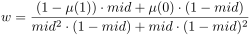
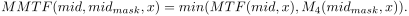

1 Introduction
[hide]
Fuzzy logic is a mathematical theory which was developed to deal with fuzzy data. In Boolean logic a term is either true or false, whereas in fuzzy logic a term can be partial true. The degree of truth is described with the aid of membership functions. Typically, fuzzy logic will be applied in the field of signal processing and image processing is an essential part of this.
1.1 Fuzzy Histogram Hyperbolization
Histogram hyperbolization is a classical algorithm for contrast enhancement and the way to generalize it to a fuzzy logic algorithm was proposed by H. R. Tizhoosh and M. Fochem [1]. For an image of size M x N any kind of histogram manipulation can be described by a function f which transforms the grey level gm, n of the (m, n)th pixel like
or for a fuzzy processing
where μ(gm, n) is the membership of gm, n.
For fuzzy histogram hyperbolization (FHH) the parameters can be determined as follows
and
So finally, the equation for FHH will be:
The fuzzifier β modifies the membership values additionally, which allows to control the grey level dynamics of the resulting image.
1.2 Membership Functions
As mentioned, the fuzzy membership function of a fuzzy set represents the degree of truth as an extension of valuation. For a given fuzzy set, in the case under consideration the sample values of an astonomical image, the most suitable membership function cannot be determined automatically but must be discovered by trial and error. For that reason the script offers four different alternative membership functions for contrast enhancement and additionally one for stretching linear images.
- Linear function, as used in the original paper [1]:
[6]
where gmin and gmax are the minimal and maximal values of the image histogram. With the linear membership function the FHH algorithm transfers the original histogram values (example with gmin = 0.1 and gmax = 0.9) as follows:
As can easily be seen in the figure below, the variation of the fuzzifier β has a wide influence on the FHH algorithm.
- MTF function, as a typical S-shape function: :
[7]
where gmin and gmax are again the minimal and maximal values of the image histogram and mid is the alterable midtone of the MTF function. With the MTF membership function the original histogram values (same example as above) will be transferred as follows:
The midtone mid determins the shape of the MTF function, whereas β works in the same way as for the linear membership function. The following diagram illustrates the impact of mid:
- Sigmoid function, as another S-shape function:
[8]
gmin, gmax and mid as above. The effect of the Sigmoid membership function is shown below:
The specific parameters mid and γ modify the shape of the Sigmoid function. The impact of mid and γ is shown in the following diagrams:
Typically, a fuzzy membership function is normalized, which means μ(0) = 0 and μ(1) = 1. The Sigmoid membership function is not normalized, so that the pixel values of the resulting image not fully utilize the range from zero to one. On the other hand the gaps on both tails of the curve are not really serious, therefore the Sigmoid membership function works very efficient anyway. - Normalized Sigmoid function, similar to the Sigmoid membership function, but with a normalization term N in [8]:
[9]
where N is defined as
[10]
with
[11]
In comparison with the Sigmoid membership function, the normalized Sigmoid membership function utilizes the full range from zero to one, so that the contrast enhancement is more powerful than for the ordinary Sigmoid membership function. [12]
[12] - Gaussian function, or to be more precise the left part of a Gaussian bell curve as another S-shape function:
[13]
gmin and gmax as above. The FHH transformation with a Gaussian membership function is illustrated in the figure below:
The parameter σ represents the standard deviation of the Gaussian distribution. The impact of σ is shown is the following diagram:
The Gaussian membership function is also not normalized, because μ(0) ≠ 0. But similar to the Sigmoid membership function this has only a small effect on the quality of the FHH algorithm using a Gaussian membership function. - Normalized Gaussian function, similar to the Gaussian membership function, but with an additional term y0 in the equations [3] and [4] to meet the stipulation μ(0) = 0:
[14]
and
[15]
with
[16]
In comparison with the Gaussian membership function, the normalized Gaussian membership function allows a more powerful contrast enhancement than the ordinary Gaussian membership function. - Masked MTF function, as a modified membership function especially for stretching linear images:
The MTF function is a typically used for stretching linear images and defined as
[17]
where the shape of the function is characterized by the midtone mid.
To mitigate the effects of the MTF function, an iterative algorithm Mi is applied as follows:
 [18]
[18]
[19]
[20]
The Masked MTF function MMTF used in the script is defined as
[21]
The two parameters mid and midmask are not identical and are automatically calculated by the script dependig on the image data. By this construction, a function MMTF is defined which produces a very strong stretch for small values and a weakened stretch for large values. This is ideal for using MMTF as a membership function for the Fuzzy Histogram Hyperbolization algorithm to stretch linear images.
1.3 Local Algorithm
Generally, the FHH algorithm can be applied on an image as a whole. However, to increase the impact of the contrast enhancement, the algorithm should be applied locally to discrete segments of the image. In this case the individual histogram information of each segment is used for the FHH algorithm [2]. For the local fuzzy histogram hyperbolization (LFHH) algorithm the target image will be evenly divided into a grid pattern of rectangles. The LFHH algorithm also includes a final interpolation procedure which avoids a bordering between the segments.
2 Description
[hide]
This script applies a FHH algorithm locally to greyscale and color images. The specification of the parameters is divided into five sections:
- Image Selection
- Segmentation Parameters
- Fuzzy Parameters
- Membership Function Parameters
- Output Options
The tool bar at the bottom includes a button to reset the parameters to the default settings as well as a button to show this documentation.
2.1 Image Selection
Originally, the script was intended to provide contrast enhancement for nonlinear grayscale images. Although contrast enhancement should basically be applied to the luminance component, the script can also process color images. In addition, linear grayscale images can be stretched as well. For this the membership function Masked MTF has to be used. (Although the Masked MTF function gives good results for color images, it is still not capable for rationally stretching linear RGB images. The script has a check routine, if a processing of a linear RGB image leads to meaningful results. Basically, processes like MaskedStretch or ArcsinhStretch are better suited for stretching RGB images.)
Additionally, an optional star mask can be chosen. The application of a star mask excludes stars from the contrast enhancement. Stretching linear images with Masked MTF requires no star mask!
2.2 Segmentation Parameters
To apply the FHH algorithm locally to the target image the size of the local image segments is needed to be specified. The segmentation can be chosen from 5 x 5 up to 25 x 25. If clustering is selected, the fuzzy parameters of bordering segments with similar characteristics will be harmonized. Otherwise individual fuzzy parameters will be applied to each segment. The threshold parameter is used to define the sensitivity of the clustering method.
2.3 Fuzzy Parameters

gmin and gmax are the essential parameters of every of the four membership functions for contrast enhancement which are offered by the script. The local algorithm identifies gmin and gmax individually for each single segment of the target image. In particular, for a granular segmentation the individual extreme values can vary in a wide range. For that reason it might be useful the define a greatest lower bound (glb) for gmin respectively a least upper bound (lub) for gmax to limit the variation of the extreme values.
The fuzzifier β modifies the dynamics of the FHH algorithm. This parameter can be used either globally or locally. In the case of a global use, a constant value for β will be applied to every image segment. Whereas for a local use β is calculated individually for each segment depending on the mean segment brightness. In both cases the strength of the method can be controlled by a user-defined specification of β.
2.4 Membership Function Parameters
In this section the membership function can be chosen. Four membership functions for contrast enhancement and one for stretching linear images are available:
- Linear function
- MTF function
- Sigmoid function
- Gaussian function
- Masked MTF function (linear stretch)
The midtone of the MTF and Sigmoid function can be speciefied as well as the parameters γ for the Sigmoid function and σ for the Gaussian function. For these two functions, which are originally not normalized (which means that the pixel values of the resulting image not fully utilize the range from zero to one), the option of an additional normalization can also be selected.
2.5 Output Options
The output options allow to select an automatic Histogram Transformation (HT) process to optimize the brightness of the resulting image. Therefor the HT target median can be defined.
Additionally, it can be selected, whether the script will replace the the target image or that the modified image will be provided as a newly created image window and the target image won't be affected.
3 Usage
[hide]
3.1 Typical Workflow
A careful preparation of the target image and its star mask is essential for an effective application of the script. As every contrast enhancement algorithm, FHH is very sensitive to the existing noise in the target image. For that reason it is an important factor to reduce the noise before starting the script. Any existing stacking artifacts should be removed before as well. The additional use of a star mask is strongly recommended, otherwise the contrast enhancement would strengthen the stars too much. However, the size of the stars in the mask must be determined very carefully to avoid ring artifacts in the final image. Only the stretching of linear images with Masked MTF does not require the use of a star mask.
The next step is the selection of a reasonable segmentation. The local application causes a very strong contrast enhancement, therefore it is recommended not to choose a too granular segmentation. Another possibility to regulate the effect of the segmentation is the clustering option. Usually, the clustering of neighboring segments with similar characteristics will lead to better results. The clustering threshold determines the sensitivity of that method. Values between 0.05 and 0.15 are typical.
Before starting the determination of the particular FHH parameters it is useful to define the target median of the resulting image in the output options. Without that the manipulation of the histogram can lead to unsatisfying results which are too dark or too bright. The parameter works comparable to those in other intensity transformation processes. Indeed the script applies a final instance of HistogramTransformation using the specified target median.
Trying out the different membership functions to assess their effect on the target image is a necessary labor. For this purpose the variation of the FHH parameters has a wider influence than the membership function parameters. Usually the determination of the greatest lower bound for gmin respectively the least upper bound for gmax has the highest impact. Typical values for the greatest lower bound are between 0.2 and 0.4, for the least upper bound between 0.7 and 0.9. In most cases the local β-method leads to better results then the global one. Typical values for β are between 1.1 and 1.5. The specific parameters for the single membership functions can be used for a final fine tuning.
Since contrast enhancement with LFHH is very strong, moderate parameter settings must be selected for color images to avoid color artifacts. A good alternative for enhancing the contrast of color images is to extract the luminance component from the RGB image, then apply LFHH to the L image and merge it back to the RGB image using LRGBCombination. Try both alternatives and take the best, or combine them.
All used parameter values are documented in the console output and are stored in the FITS header of the resulting image. Additionally, the console output includes a measurement of the local contrast and the signal-to-noise ratio of the resulting image. These key figures may be helpful to assess the image quality.
3.2 Examples
In the following example LFHH is applied to a Hα-image of M16. On the left you can see the original target image and on the right the star mask used for the algorithm.
Typical results for the different membership function can be seen below.
Top left: Linear/15x15/Clustering 0.05/FHH glb 0.45/FHH lub 0.55/Local FHH beta 1.10/HT median 0.23
Top right: MTF/15x15/Clustering 0.05/FHH glb 0.4/FHH lub 0.6/Local FHH beta 1.20/midtone 0.50/HT median 0.23
Mid left: Sigmoid/15x15/Clustering 0.05/FHH glb 0.4/FHH lub 0.6/Local FHH beta 1.05/gamma 5.0/midtone 0.50/HT median 0.23
Mid right: Sigmoid Normalized/15x15/Clustering 0.05/FHH glb 0.4/FHH lub 0.6/Local FHH beta 1.05/gamma 5.0/midtone 0.50/
HT median 0.23
Bottom left: Gauss/15x15/Clustering 0.05/FHH glb 0.45/FHH lub 0.55/Local FHH beta 1.20/sigma 0.60/HT median 0.23
Bottom right: Gauss Normalized/15x15/Clustering 0.05/FHH glb 0.45/FHH lub 0.55/Local FHH beta 1.10/sigma 0.75/
HT median 0.23
And finally a simple combination of the four images with PixelMath:
The next example, a synthetic L component of IC 410's core region, shows the results of stretching a linear image using the Masked MTF membership function. For comparison, the first image is stretched with AutoSTF, the second one with Masked MTF (parameter settings: Masked MTF/25x25/Clustering 0.05/Local FHH beta 1.20/MMTF strength 1.30/HT median 0.23).
For the same target as in the last example, but now as a non-linear SHO image, the following example shows the different results for contrast enhancement of RGB images. In the top row you can see on the left the original target image and on the right the star mask which was used for the algorithm, the lower row shows the effect of contrast enhancement with extracted L component on the left (parameter settings for L: Gauss/25x25/Clustering 0.05/FHH glb 0.35/FHH lub 0.85/Local FHH beta 1.20/sigma 0.55/HT median 0.22) and the result of the direct application of the script on the right (parameter settings: Gauss/25x25/Clustering 0.05/FHH glb 0.35/FHH lub 0.85/Local FHH beta 1.20/sigma 0.55/HT median 0.20).

And again a combination of the two images with PixelMath:
References
[1] Hamid R. Tizhoosh, Manfred Fochem, Fuzzy Histogram Hyperbolization for Image Enhancement, Proc. of EUFIT'95, vol. 3, pp. 1695 - 1698, 1995
[2] H. R. Tizhoosh, G. Krell, B. Michaelis, Locally adaptive Fuzzy Image Enhancement, Computational Intelligence, Theory and Applications, Proc. of 5th Fuzzy Days, pp. 272 - 276, 1997
Copyright © 2018 Frank Weidenbusch